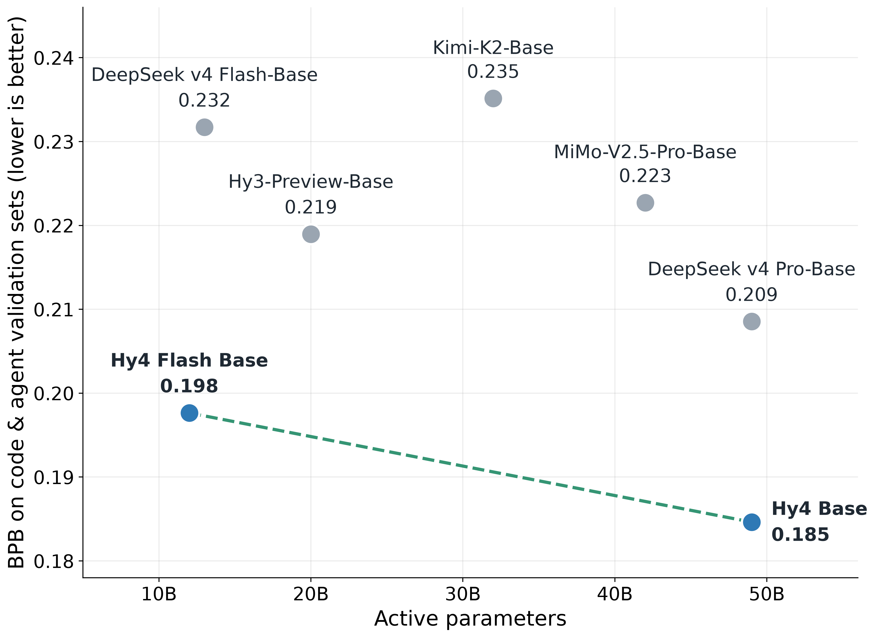
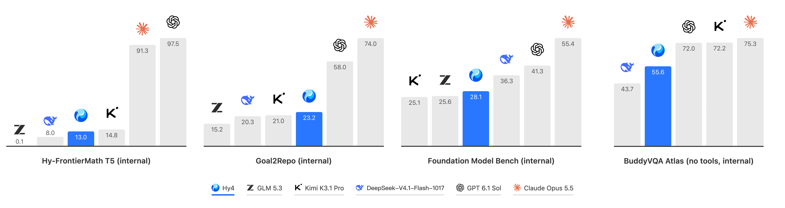

English ｜ 中文


🖥️ <b>官方网站</b> | 💬 <b>GitHub</b> | 📱 <b>GGUF</b>
---
目录
- 模型介绍
- 预训练模型能力
- 主要改进
- 能力与应用场景
- 视觉与电脑任务
- 前端与游戏开发
- 金融与办公场景
- 科研与模型研发
- 长期个人助理
- 已知局限
- Benchmark 附录
- 新闻
- 模型链接
- 快速开始
- 推理和部署
- DFly2 投机解码
- 量化工具
- 推理框架
- vLLM
- SGLang
- 模型微调
- System Card
- 许可证
- 联系我们
---
模型介绍
Hy4 是由腾讯混元团队研发的新一代混合专家（MoE）旗舰模型，支持文本、图像和视频理解。语言模型主干总参数量 770B，每个 token 激活 49B，共包含 78 层，第一层采用标准 FFN，其余 77 层均为 MoE 结构，每层包含 256 个路由专家与 1 个共享专家，每个 token 激活 top-8 路由专家及共享专家。主干之外内置 5 层 DFly2 草稿模型（参数量 3.3B）以支持投机解码。
在架构层面，受到 DeepSeek 和 GLM 的启发，注意力侧采用 Gated DeepSeek Sparse Attention（Gated DSA），并引入 IndexCache 跨层复用稀疏索引，残差侧采用 iHC (identity Hyper-Connections) 扩展层间信息通路。视觉侧采用支持动态分辨率的 ViT，通过适配器将图像和视频帧的特征转换为视觉 token，与文本 token 一同输入语言模型。并行草稿模型 DFly2 直接复用 Hy4 的 KV cache 与稀疏索引，以固定的低开销支持长上下文投机解码。
模型规格
| 规格项 | 取值 |
|---|---|
| 模型概览 | |
| Architecture | Mixture-of-Experts (MoE) |
| Total Parameters (excluding ViT, adapter, and DFly2) | 770B |
| Activated Parameters per Token | Text 49B + Vision 1.23B |
| ViT Parameters | 1.23B |
| DFly2 Parameters | 3.3B |
| Context Length | 1M (1,048,576 tokens) |
| 语言模型主干 | |
| Backbone Layers | 78 — 1 dense layer and 77 MoE layers |
| Hidden Size | 6,144 |
| Vocabulary Size | 120,832 |
| Residual Connections | iHC (identity Hyper-Connections) with 4 residual streams |
| 注意力 | |
| Attention Architecture | Gated DeepSeek Sparse Attention (Gated DSA) with IndexCache |
| Attention Formulation | Multi-head Latent Attention (MLA) |
| Attention Heads | 64 |
| MLA q_lora_rank | 2,048 |
| MLA kv_lora_rank | 512 |
| Indexer Heads / Head Dimension | 32 / 128 |
| Sparse Context Selection | Top-2,048 tokens selected by the indexer |
| 前馈网络 | |
| Dense FFN Intermediate Size | 18,432 |
| Routed Experts per MoE Layer | 256 |
| Shared Experts per MoE Layer | 1 |
| Activated Routed Experts per Token | 8 |
| Expert Intermediate Size | 2,048 |
| 视觉编码器 | |
| Vision Encoder Layers | 40 |
| Vision Encoder Hidden Size | 1,536 |
| Vision Encoder Intermediate Size | 6,144 |
| Vision Encoder Attention Heads | 16 |
| Vision Patch Size | 16 × 16 |
| Vision Position Embedding Size | 128 × 128 |
| Visual Feature Merging | 2 x 2 |
预训练模型能力
内部代码与 Agent 验证集上的 BPB（Bits-per-byte，每字节比特数），数值越低越好：

预训练模型的 few-shot 基准评测结果：
| 类别 | 评测基准 | #Shots | Hy4 Base | Hy4 flash Base | Hy3 preview Base | DeepSeek-V4-flash-Base | DeepSeek-V4-Pro-Base |
|---|---|---|---|---|---|---|---|
| 知识 | MMLU† | 5 | 91.6 | 88.7 | 87.5 | 89.7 | 91.1 |
| MMLU-Pro† | 5 | 73.9 | 71.1 | 65.8 | 68.6 | 73.4 | |
| MMLU-Redux† | 5 | 90.6 | 87.6 | 87.0 | 88.8 | 90.2 | |
| SuperGPQA† | 5 | 62.7 | 57.8 | 52.3 | 52.5 | 54.8 | |
| C-Eval† | 5 | 95.0 | 92.0 | 90.1 | 91.9 | 93.4 | |
| CMMLU† | 5 | 93.1 | 91.6 | 89.6 | 89.8 | 90.7 | |
| SimpleQA | 5 | 57.2 | 37.5 | 26.4 | 31.3 | 52.1 | |
| Chinese-SimpleQA† | 5 | 83.9 | 74.6 | 69.6 | 71.9 | 76.6 | |
| AGIEval (English)† | 3 | 79.3 | 75.4 | 76.0 | 76.3 | 78.2 | |
| AGIEval (Chinese)† | 3 | 91.2 | 90.6 | 87.8 | 88.5 | 89.8 | |
| 推理 | HellaSwag (3,000-item subset) | 10 | 87.1 | 85.2 | 85.7 | 85.1 | 86.8 |
| PIQA | 4 | 85.3 | 84.4 | 84.6 | 83.8 | 84.9 | |
| ARC-Challenge | 0 | 97.3 | 95.0 | 96.0 | 97.3 | 97.0 | |
| Social IQa | 0 | 82.7 | 80.1 | 80.5 | 72.5 | 73.1 | |
| KOR-Bench | 3 | 57.6 | 54.7 | 54.6 | 53.4 | 55.4 | |
| C³ | 0 | 82.4 | 77.3 | 75.9 | 74.1 | 78.3 | |
| 数学 | U-MATH | 5 | 71.6 | 69.8 | 60.9 | 57.4 | 64.8 |
| OCW Courses | 5 | 66.7 | 64.0 | 62.6 | 63.3 | 68.2 | |
| 代码 | MBPP-plus | 3 | 74.0 | 73.7 | 77.4 | 76.8 | 79.1 |
| 多语言 | Belebele (5-language subset)† | 5 | 95.0 | 93.8 | 94.2 | 94.4 | 95.2 |
| INCLUDE† | 5 | 88.1 | 82.8 | 84.3 | 84.0 | 84.3 | |
| 多模态 | MMMU-Pro (Standard, 10 opts) | 4 | 59.6 | 52.0 | — | — | — |
| SimpleVQA | 4 | 54.5 | 48.5 | — | — | — | |
| CVBench | 4 | 86.7 | 83.4 | — | — | — | |
| RealWorldQA | 4 | 72.3 | 71.1 | — | — | — | |
| TextVQA | 4 | 78.2 | 73.4 | — | — | — | |
| CountBenchQA | 4 | 90.6 | 86.6 | — | — | — |
† 标注的文本评测采用宏平均准确率，其余文本评测采用本评测框架报告的准确率。每行最高分以粗体标示；加粗不代表差异具有统计显著性。
多模态结果仅列出 Hy4 Base 和 Hy4 flash Base。
ARC-Challenge 和 HellaSwag 分别使用包含 299 道和 3,000 道题目的子集。INCLUDE 使用覆盖 44 种语言、包含 5,000 个样本的 Lite 子集。Belebele 覆盖德语、韩语、越南语、西班牙语和俄语，共 4,475 个样本。
免责声明：我们的基座模型在中期训练中使用了大量合成指令数据，因此在 few-shot 评测中偶尔无法遵循预期的答案格式，可能导致得分失真。
主要改进
相比 Hy4 preview，Hy4 显著扩展了预训练和后训练规模，引入视觉理解能力，并大幅提升了指令遵循、长文理解、长程任务和深度研究等综合能力。

能力与应用场景
视觉与电脑任务
Hy4 结合视觉感知、推理与工具调用，支持细粒度图像理解、复杂图表分析，以及结合命令行与图形界面的电脑操作任务。针对 Blender、CAD 等专业软件和跨应用长程任务开展的专项训练，提升了任务规划与执行能力。
前端与游戏开发
我们针对复杂交互、业务逻辑、状态管理和前后端联动进行了优化，让生成的界面不仅好看，而且功能完整可用。通过与腾讯 IEG 专业游戏开发者合作，Hy4 在功能实现、玩法逻辑、状态理解和资产处理方面持续进步，深度适配 Unreal Engine、Unity、Godot 等主流引擎，并开始扩展至多人联机游戏开发。相比 Hy4 preview，Hy4 在 GameDev 和 GameLogic 评测中分别提升 19.1% 和 9.8%。
金融与办公场景
我们基于真实金融场景构建了数千个工作空间和上万个高质量任务，覆盖基金研究、证券分析、量化策略、资产配置、公司金融、财税会计等专业流程。联合腾讯金融科技 FiT 开展的众测邀请了 213 位金融专家，其中 153 位来自外部头部金融机构，约七成拥有五年以上工作经验。基于 579 个真实金融任务的众测显示，Hy4 综合表现位居开源模型第一：
| 模型 | 平均分（满分 4 分） |
|---|---|
| Hy4 | 3.04 |
| DeepSeek-V4.1-Flash-1017 | 2.97 |
| Kimi K3.1 Pro | 2.68 |
| GLM-5.3 | 2.68 |
在金融智能体公司讯兔科技的内部评测 IRAB 中，Hy4 较 Hy4 preview 提升 12.03 个百分点。针对时效检索、多源信息整合与事实一致性校验的搜索优化，也提升了金融和办公场景的可靠性：在自建测试中，幻觉率从 15.76% 降至 5.45%，猜测导致的错误率从 23.1% 降至 5.6%。Hy4 还支持与用户实时协作编辑 Word、Excel、PPT 等办公文件，盲评显示其文档美观度、稳定性与可用性均有明显提升。
科研与模型研发
Hy4 将复杂推理、科学编程与长程任务执行相结合，进一步提升端到端推进科研工作的能力。在涵盖 7 大学科、123 项研究任务的 TenureTrail 内部评测中，Hy4 位居开源模型第一。结合 Hyra 2.0 脚手架，Hy4 优化了内部同架构小模型的预训练基础设施，并自动训练出在多项评测中优于官方基线的 Jev 模型。
长期个人助理
在提供相关工作上下文后，Hy4 可以综合聊天记录、邮件、文档、日程和会议记录等信息，梳理各项目的历史与最新进展，识别待办任务、准备会议、提醒截止事项，并协助安排优先级。
已知局限
尽管 Hy4 已经是目前最强的开源模型之一，其与顶尖闭源模型仍然存在较大差距，尤其在我们内部构建的前沿数学、长程开发、模型迭代、视觉问答等领域的高难度测试集上。

Benchmark 附录

新闻
- 我们在 Hugging Face、ModelScope 和 GitCode 开源 Hy4、Hy4-FP8 和预训练模型 Hy4 base 的权重。
模型链接
| 模型名 | 简介 | Hugging Face | ModelScope | GitCode |
|---|---|---|---|---|
| Hy4 | Instruct 模型 | Model | Model | Model |
| Hy4-FP8 | FP8 量化 Instruct 模型 | Model | Model | Model |
| Hy4 base | 预训练模型 | Model | Model | Model |
Hy4 base 为预训练底座，非指令微调聊天模型；下方对话与推理模式示例适用于 Hy4 和 Hy4-FP8。
快速开始
建议先通过 vLLM 或 SGLang 部署服务，然后通过 OpenAI 兼容 API 调用：
pythonfrom openai import OpenAI client = OpenAI(base_url="http://127.0.0.1:8000/v1", api_key="EMPTY") response = client.chat.completions.create( model="hy4", messages=[ {"role": "user", "content": "你好！请简单介绍一下你自己。"}, ], temperature=0.9, top_p=1.0, ) print(response.choices[0].message.content)
推荐参数：temperature=0.9，top_p=1.0。
推理模式：reasoning_effort可选"no_think"、"high"，默认为"high"（深度思维链），适合数学、编程、推理等复杂任务。日常对话如需直接回复，可传入extra_body={"chat_template_kwargs": {"reasoning_effort": "no_think"}}。
具体部署方式请参考下方推理和部署章节。
推理和部署
DFly2 投机解码
DFly2 是基于 AngelSpec 框架训练的 Hy4 投机解码草稿模型，直接复用主模型的 Top-k Sparse KV：每个 draft 层与 Hy4 对应的 DSA 层共享 KV cache（KV Share）及 indexer 选出的 top-2048 个位置（Index Share）。由此带来三点优势：
- 计算开销固定：每个草稿 token 至多关注约 2K 个 key，注意力复杂度与上下文长度无关。
- 零额外 KV 显存：无需维护草稿模型独立的 KV cache。
- 适配 PD 分离：不参与 prefill，P→D 仅额外传输一个末层隐状态。

量化工具
我们提供了 AngelSlim——一套易用、全面、高效的大模型压缩工具包，涵盖常用量化算法、低比特量化和投机采样等能力。
对于本模型我们提供了GGUF 压缩版本以供端测使用。
推理框架
对于生产环境部署，我们建议使用 vLLM 或 SGLang。请参考部署方案：
vLLM
使用社区官方镜像 vllm/vllm-openai:hy4 部署：
bashdocker run --gpus all \ --privileged --ipc=host -p 8000:8000 \ -v ~/.cache/huggingface:/root/.cache/huggingface \ -e VLLM_USE_RUST_FRONTEND=1 \ vllm/vllm-openai:hy4 tencent/Hy4-FP8 \ --dtype bfloat16 \ --limit-mm-per-prompt '{"image":1,"video":0}' \ --tensor-parallel-size 8 \ --enable-auto-tool-choice \ --reasoning-parser hy_v4 \ --tool-call-parser hy_v4 \ --speculative-config '{"num_speculative_tokens":5,"method":"dfly"}' \ --attention-backend FLASHMLA_SPARSE \ --port 8000 \ --served-model-name hy4
SGLang
使用社区官方镜像 lmsysorg/sglang:hy4 部署（支持 x86 和 Arm）：
bashdocker pull lmsysorg/sglang:hy4 docker run --gpus all --ipc=host -p 8000:8000 lmsysorg/sglang:hy4 \ sglang serve \ --model-path tencent/Hy4-FP8 \ --tp 8 \ --speculative-algorithm DFLY \ --port 8000 \ --served-model-name hy4
模型微调
Hy4 提供了完整的模型微调流程，详细的微调文档请参考：模型微调指南。
System Card
请参阅 Hy4 System Card。
许可证
Hy4 基于 Tencent Hy License 发布。详情请参阅 LICENSE。
联系我们
如有问题或建议，欢迎通过邮件联系我们的研发和产品团队：
📧 hunyuan_opensource@tencent.com
---
<i>Hy4 由腾讯混元团队研发。</i>